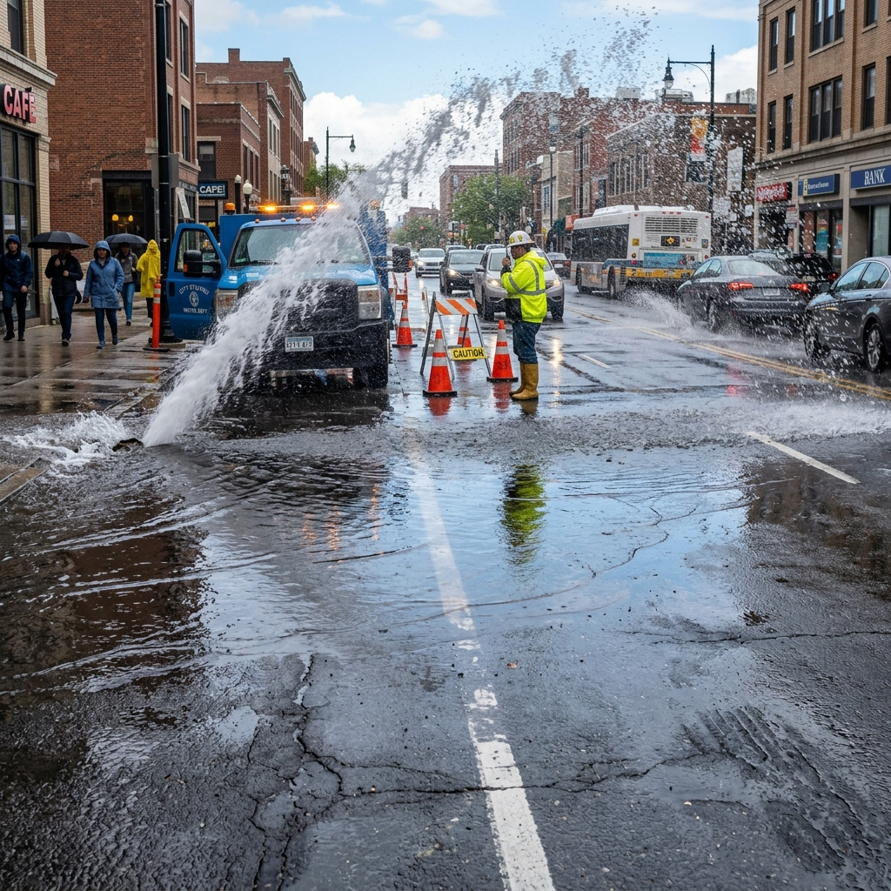

Citizen Portal
Simulate reporting an urban grievance and watch the AI process it in real-time.
Report an Issue
Help us improve your neighborhood. Take a photo of an issue to initiate AI-assisted routing.

Tap GPS for your real location, or click anywhere on the Admin Map to pin a custom spot.
Initializing Multimodal Ingestion...
Parsing image metadata & geo-tags...
Ticket Routed Successfully
#GRV-84920Admin Command Center
Municipal dispatch interface: view real-time urban insights and auto-routed tickets.
4
Total Active Reports
1
Critical Tickets (>80)
2
Active Dispatches
1
Resolved Today
Live Grievance Map (Bengaluru Metro)
Click map to set custom coordinates for next citizen reportUrban Insights & Routing Metrics
Grievance by Department
Priority Distribution
Live Routed Tickets Feed
| Ticket ID | Image Preview | Category | Location | Urgency | Assigned Department | Status | Actions |
|---|
AI Engine & Latency Sandbox
Phase 4 Testing Suite: Simulate model degradation under variable weather, lighting, and resolution conditions.
Environmental Controllers
Adjusting these metrics simulates real-world stress testing of the CNN classification model, calculating changes in accuracy confidence, pipeline latency, and dynamic safety factor overrides.
Live Inference Analytics
Pipeline Execution Latency Breakdown
CNN Model Confusion Matrix (N = 1,200 Validated Samples)
Overall Accuracy: 94.6%| Actual \ Predicted | Pothole | Streetlight | Garbage | Water Leak | Precision |
|---|---|---|---|---|---|
| Pothole | 288 | 5 | 4 | 3 | 96.0% |
| Streetlight | 2 | 291 | 1 | 6 | 97.0% |
| Garbage | 8 | 3 | 279 | 10 | 93.0% |
| Water Leak | 5 | 7 | 11 | 277 | 92.3% |
Values represent absolute sample counts. Diagonal highlighted cells show correct classifications. Preprocessing and noise-filters improve edge case performance in heavy fog/night settings.
System Design & Architecture
Detailed technical structure and recommended scientific references for the CivicAI platform.
High-Reliability Processing Pipeline
Phase 1: Ingestion
Multi-modal inputs. Captures compressed image blobs, location metadata (EXIF/GPS), and user description text.
Phase 2: Core Classification & NLP
Mobile-optimized CNN running classification. Parallel BERT-lite model extracts sentiment weights & key urgencies from description text.
Phase 3: Prioritization Engine
Applies adaptive scoring using a multi-factor equation: Score = (C_base * W_class) + (S_user * W_sev) + (P_zone * W_zone) + E_mod
Phase 4: Routing & Dispatch
Routings mapped via municipal boundaries database, transmitting ticket headers to specific department queue with webhooks.
Recommended Academic Foundations
CivicAI was built by applying rigor and methodologies from the following key literature:
Learning OpenCV 4
Used for raw image preprocessing, contrast enhancement under nighttime conditions, edge detection for structural integrity assessments of roads (pothole depth estimation), and metadata sanitization.
Designing Data-Intensive Applications
Guides the high-availability message broker, event-sourced audit logs of municipal routing, outbox-pattern dispatches, and maintaining consistent read-models for the central government dashboards.
Elements of Adaptive Testing
Adapted the psychometric adaptive logic for grievance prioritization. Dynamic weighting adjusts urgency dynamically based on historical response rates, incident clusters, and municipal feedback loops.
Multimedia Learning
Applied to the UI layout design to minimize cognitive load for citizens under stress. Visual cues are localized, inputs are progressive, and jargon-free status indicators promote intuitive interactions.